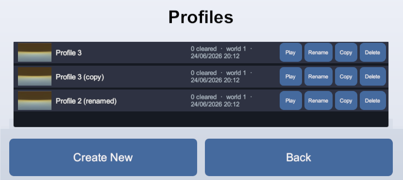
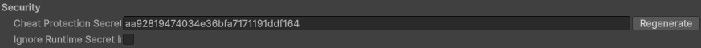
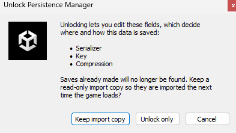
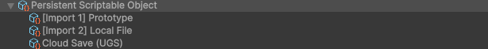
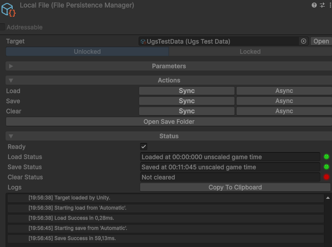
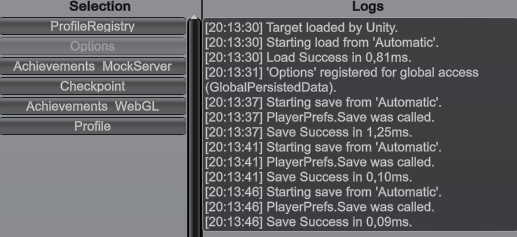

Guides
Multiple save slots
A slot is a named save: "Slot 1", "Hardcore", a player profile id. To make a persistent object
support slots, add the empty marker interface IMultiSlot:
public class PlayerData : PersistentScriptableObject, IMultiSlot
{
public int gold;
}
Now the object saves and loads under whichever slot is selected. Until a slot is set, saves
and loads are ignored (there is nowhere to put them). Switch slot at runtime through the
manager, or for every manager at once through Slots.GlobalSlot:
// Per object
playerData.PersistenceManager.Slot = "Slot 1";
// Or globally, for every active manager
Slots.GlobalSlot = "Slot 1";
Setting a slot is a scope transition: the old slot is saved (if auto-save is on), then the new
slot is loaded (if auto-load is on), exactly as if the object had been unloaded and reloaded. GlobalSlot
also applies to managers that load later: any manager entering scope after it was set
picks up the current global slot on its own.
Managing slot storage
The static Slots class operates on a slot's saved data without switching
slots: copy, rename and delete slots, snapshot the live data onto one, or bring one's
data into the ongoing game.
// Duplicate Slot 1 onto Slot 2 for these targets
Slots.Copy("Slot 1", "Slot 2", playerData, worldData);
// Rename, then delete
Slots.Rename("Slot 2", "Backup", playerData);
Slots.Delete("Backup", playerData);
// Snapshot the LIVE data onto another slot; the current slot's save is untouched
Slots.SaveTo("snapshot 0", playerData);
// Bring a slot's saved data into the ongoing game: a real load of that slot,
// the next save persists it onto the current slot, the source is never modified
Slots.LoadFrom("snapshot 0", playerData);
Slots also raises OnSlotUpdated, OnSlotCopied and
OnSlotDeleted so your UI can refresh as storage changes.
Listing slots without loading them (slot registry)
A slot registry lists what saves exist, with a small summary of each (level
reached, play time, a thumbnail), without loading any profile in full. Inherit
PersistentSlotRegistry<TTarget, TInfo>: an always-global persistent object
that watches your saves and records one entry per slot, with a summary you define. The tracked
target type (ProfileData here) must implement IMultiSlot.
// The small per-slot summary the menu shows, no full load needed
[Serializable]
public struct ProfileSummary
{
public int clearedLevels;
public int unlockedWorlds;
}
public class ProfileRegistry : PersistentSlotRegistry<ProfileData, ProfileSummary>
{
// Called when a profile is saved: pull out the summary to remember for its slot
protected override ProfileSummary CaptureInfo(ProfileData target)
=> new() { clearedLevels = target.cleared.Count, unlockedWorlds = target.worlds };
}The registry updates itself as slots are saved, deleted, copied or renamed, so your menu just reads it:
foreach (var entry in profileRegistry.Entries)
AddSlotButton(entry.Slot, entry.Info.clearedLevels, entry.Screenshot);
// Jump straight to the newest save for a "Continue" button
string latest = profileRegistry.LatestSlot;
Each SlotEntry carries the Slot name, your Info summary,
the save time, and an optional Screenshot (override CaptureScreenshot
or CaptureScreenshotAsync to snap a thumbnail per save). The Demo's
ProfileRegistry is a working example.

Rotating snapshots
To keep the last few automatic snapshots alongside the manual save, the game plays on one
slot as usual and a single Slots.SaveTo snapshots the live data into a rotating
ring of snapshot slots. The current slot's save is never touched, so the manual save stays
where the player left it:
const int MaxSnapshots = 3;
// Call it from your trigger of choice: a timer, a checkpoint, an area transition.
void TakeSnapshot() => Slots.SaveTo(NextSnapshotSlot(), profileData);
// Each profile keeps its own ring: its snapshot slots carry its slot name as a prefix.
string SnapshotPrefix => profileData.PersistenceManager.Slot + " snapshot ";
// Overwrite the oldest snapshot slot, or fill a free one. No rotation index to
// persist: the registry's save times already order the ring.
string NextSnapshotSlot()
{
List<SlotEntry<ProfileSummary>> snapshots = new();
foreach (SlotEntry<ProfileSummary> entry in profileRegistry.Entries)
if (entry.Slot.StartsWith(SnapshotPrefix))
snapshots.Add(entry);
if (snapshots.Count < MaxSnapshots)
return SnapshotPrefix + snapshots.Count;
return snapshots[snapshots.Count - 1].Slot; // Entries is newest-first, so last is oldest
}
Each snapshot records its summary, save time and thumbnail in the slot registry above, so the
ring appears in the load menu. When the player picks one, Slots.LoadFrom loads
that slot's data into the object. The snapshot slot itself is never modified, and later saves
keep landing on the current slot:
// From the load menu, in game or after a game over: no slot switching involved.
Slots.LoadFrom(chosenSnapshotSlot, profileData);LoadFrom only changes the object's live, in-memory state: no save is copied or
overwritten, and no automatic save runs. It does need a current slot for later saves to land
on, so from a title screen, select the profile first
(Slots.GlobalSlot = ...), then call LoadFrom.
The same two calls cover multiple manual saves. When each manual save is a slot the
player plays on (a profile), the ring above already follows it through its prefix. When manual
saves must stay untouched while playing (a "save as" list), they work like snapshots: the game
plays on one working slot, a save command is a Slots.SaveTo("manual ..."), and the
load menu is a LoadFrom of any entry, manual or snapshot alike. Only the working
slot receives the automatic saves.
Saving asset references
A field pointing at a project asset (the equipped weapon, the selected skin, the unlocked levels) saves and loads like any other field:
public class PlayerData : PersistentScriptableObject
{
public WeaponDefinition equipped;
public List<LevelDefinition> unlockedLevels = new();
}There is nothing to wrap and nothing to declare. Drag the asset into the field, and the save finds it again on the next run.
Behind the scenes, a reference is a pointer that only means something while the game is running, so it cannot be written to a file as it is. What gets saved is a stable id for the asset, resolved back through the asset registry on load, which means the asset has to be in that registry.
Which assets can be saved
A build contains an asset only if something in it points at that asset, so the registry is what puts yours in the build and keeps them resolvable: an id with no asset behind it cannot come back. Assets are registered in three ways:
- By being pointed at: the assets your persistent objects reference are registered as you assign them, which covers the ordinary case entirely. Nothing to do.
- By registered folder: in Edit > Project Settings > Persistent Asset > Asset References, add a folder to Registered Folders and everything in it is registered. This covers a family your code picks from at runtime rather than in the inspector, such as an items folder.
- By hand, from your own editor tooling, with
AssetRegistration.Register(asset).
Tools > Persistent Asset > Actions > Asset References lists everything registered and why. Each entry is an asset your build carries and loads at startup, like a preloaded asset.
When an asset disappears
If an asset your players' saves point at is deleted, the reference reads as null
and the package says so once in the console. Nothing else in the save is affected.
Reacting to load and save
Persistence can be hooked from outside the object, through its manager's events, or from inside it, through the object's own callbacks.
From outside the object: manager events
Subscribe to the manager's events to observe operations (drive a "saving..." spinner, log analytics, refresh UI after a load):
manager.OnAfterLoad += (source, result) =>
{
if (result.IsSuccess)
RefreshHud();
};
manager.OnBeforeSave += source => ShowSavingSpinner();
There are OnBefore/OnAfter pairs for load, save and clear, plus
BlockLoad/BlockSave/BlockClear hooks that veto an
operation. The static Persistence class mirrors all of these across every manager
(OnAfterAnySave and friends).
The source each load and save event carries is a PersistenceSource
telling you why it ran: Manual for an explicit Save or
Load call, Automatic for one the system triggered
(the auto-load on scope-in, an auto-save safe point, a slot change),
and SlotCopy / SlotSnapshot, seen only by the storage methods of
a custom manager (a Slots copy or rename moving a payload verbatim, and a
Slots.SaveTo writing the live data to another slot). Use it to treat them apart,
for example flashing a "Saved!" toast only on a Manual save.
From inside the object: serialization callbacks
The object itself can react by implementing ISerializationCallbacks (a
serializer-neutral equivalent of Unity's ISerializationCallbackReceiver):
public class PlayerData : PersistentScriptableObject, ISerializationCallbacks
{
public void OnBeforeSerialize() { /* flatten caches into fields */ }
public void OnAfterDeserialize() { /* rebuild caches, validate, clamp */ }
}Lifecycle: entering and leaving scope
For one-time setup and teardown (and reacting to slot changes), implement
IScopeCallbacks. Its enable / disable flags are
true only on the first scope-in and the final scope-out, so they bracket one-time
runtime state such as an event subscription:
public class GameState : PersistentScriptableObject, IScopeCallbacks
{
public void OnBeforeScopeIn(string slot, bool enable)
{
if (enable == false) // false on the slot-change scope-ins, true only the first time
return;
Application.lowMemory += Trim; // arm once
}
public void OnAfterScopeOut(string slot, bool disable)
{
if (disable == false)
return;
Application.lowMemory -= Trim; // release once
}
void Trim() { /* ... */ }
}
It runs on scope transitions, not on every operation: OnBeforeScopeIn
fires as the object enters scope (right before that load), OnAfterScopeOut as it
leaves (right after its final save), bracketing every slot the object lives through.
slot is the slot being entered or left, or null when there is none (a
non-multi-slot object, or a multi-slot object with no slot selected).
Saving on quit (the shutdown drain)
When play mode exits or the application quits with asynchronous saves still in flight (a file manager set to async, a remote manager pushing to a server), Persistent Asset runs a shutdown drain: it waits for those saves to finish before letting the quit go through, so a save is never cut off because the game is closing.
The wait is bounded on two levels:
- Each manager's own Save Timeout caps how long its save may run.
- A hard ceiling on the whole drain, in Project Settings > Persistent Asset > General: Max Drain Time In Editor and Max Drain Time In Build (5 seconds each by default; set 0 for no ceiling).
The drain runs on its own. To react to it (a "saving..." screen, a "quit anyway" button), use
the Persistence hooks:
Persistence.OnShutdownDrainStarted += () => savingScreen.Show();
Persistence.OnShutdownDrainCompleted += () => savingScreen.Hide();
// Or poll it, without subscribing to a static event
if (Persistence.IsDraining)
...
// Cut the drain short and let the quit through (unsaved data may be lost)
Persistence.ForceQuitDrain();A manager whose saves run synchronously (Player Prefs, Prototype, Local File in its default sync mode) has nothing to drain: its saves already completed inline. See Technical Q&A for what happens to in-flight saves.
Resetting & Restoring
Two different operations, each available for the whole object or for individual fields: resetting to the authored defaults, and snapshot/restore, capturing the current values to put them back later.
Reset to defaults
ResetToDefaults() on the persistence manager resets every persisted field to its
pre-play authored values, in memory only (the save is untouched, and a later save persists the
defaults). To also delete the save, use Clear().
Snapshot and restore
Snapshot() captures the whole object's current values as a string, and
Restore() puts them back: an options menu the player can cancel, a rollback point.
string checkpoint = manager.Snapshot();
// ... player tweaks settings live ...
if (cancelled)
manager.Restore(checkpoint); // back to the checkpoint, in memory; the save is untouchedResetting or restoring individual fields
To reset or restore some fields rather than the whole object (a "reset this one
setting to default" button), implement IFieldResettable. It declares two events
that the persistence manager answers; it subscribes automatically, and nothing
else should. Raise the one you need for a serializer-neutral SaveNode view, then
assign the fields you want from it:
DefaultValuesRequested: the authored defaults, to reset a field.CurrentValuesRequested: a snapshot of the current saved values, to restore a field to where it was.
public class OptionsData : PersistentScriptableObject, IFieldResettable
{
[SerializeField] float volume = 0.8f;
[SerializeField] bool subtitles = true;
// The persistence manager subscribes to these automatically; your code must never subscribe,
// so the saved data stays reachable only from inside this object. Declare the event you do not
// raise as an empty add/remove pair so it compiles with no backing field, as below.
public event Func<SaveNode> DefaultValuesRequested;
public event Func<SaveNode> CurrentValuesRequested { add { } remove { } }
// Reset just the volume to its authored default, leaving everything else untouched.
public void ResetVolume()
{
SaveNode defaults = DefaultValuesRequested();
if (defaults != null)
volume = defaults[nameof(volume)].AsFloat(volume);
}
}
An invocation returns null before the first load, with no manager, or with a
serializer that does not support nodes. Treat that as a no-op.
Global & always-loaded objects
Some objects need to be reachable from anywhere and must never miss a load or save: a settings object, the player profile, a registry of save slots.
PersistentSingleton (the easy path)
For one project-wide persistent object, inherit PersistentSingleton and add your
fields:
public class GameSettings : PersistentSingleton
{
public float masterVolume = 0.8f;
public bool subtitles = true;
}
The asset is created automatically, in the folder set under
Project Settings > Persistent Asset > Singleton.
Open it, assign a Persistence Manager, and it saves like any other persistent object. Once it
has a manager it stays loaded for the whole session and is reachable from anywhere by type
through GlobalPersistedData, with no serialized reference:
GameSettings settings = GlobalPersistedData.Find<GameSettings>();
if (settings != null)
ApplyVolume(settings.masterVolume);Find returns null.
IAlwaysGlobal (the raw interface)
PersistentSingleton is a persistent object implementing
IAlwaysGlobal, with its asset auto-created. Implement IAlwaysGlobal
directly for the same behavior on an object that is not a singleton (a slot registry does
this): the object stays loaded and active for the whole session even when no scene references
it, and registers itself in GlobalPersistedData to be fetched by type.
IAlwaysGlobal.
Registering a global by hand
A PersistentSingleton and anything marked IAlwaysGlobal register
themselves. To make an ordinary persistent object globally findable without that
interface, register it yourself with GlobalPersistedData:
GlobalPersistedData.Add(myData); // findable through Find, and kept alive, until you remove it
GlobalPersistedData.Remove(myData); // stop keeping it global
Add keeps the object in scope until Remove is called, so it has to be
removed when no longer needed, exactly like a static reference. AddPermanent does
the same and can never be removed. Only a persistent object can be registered.
Other optional hooks
Only save when changed
Implement IDirtyTracked so a save is skipped while nothing changed. Set
IsDirty = true when you modify a persisted field; it is reset to
false by the persistence manager after a successful save.
public bool IsDirty { get; set; }
public void AddGold(int amount)
{
gold += amount;
IsDirty = true;
}Fresh-start initialization
Implement IDynamicInitialize to set values programmatically the first time an
object loads with no save found. It never overwrites a loaded save, and never runs in edit
mode. It suits randomized or computed starting state.
public void DynamicInitialize()
=> startingSeed = Random.Range(0, int.MaxValue);Forcing behavior by data type
Implement IPersistencePolicy when the kind of data dictates how it must
persist regardless of the manager, for example a settings object that must always auto-load
and auto-save. Every non-null field of the returned PersistencePolicy overrides
the manager's own setting, and the inspector shows those settings locked.
public PersistencePolicy Policy => new() { AutoSave = true };Requiring a specific serializer
When an object's data only works with a particular serializer, put
[RequiredSerializer(typeof(...))] on the class. The editor locks the manager's
serializer to that type, and if a shipped manager was using a different one, it offers an
import copy so existing saves migrate automatically. The common case is
an IUpgradable object, which needs a node-supporting
serializer:
[RequiredSerializer(typeof(UnityJsonSerializer))]
public class PlayerData : PersistentScriptableObject, IUpgradable { /* ... */ }The attribute is inherited by subclasses. A subclass declaring a different serializer is a data-format conflict, and is reported as an error in the console.
Persisting without inheriting the base class
When a ScriptableObject already inherits another class that cannot be changed (a third-party base, your own framework), the same behavior is available through an attribute.
Decorate the class with [PersistentScriptableObject(...)], give it a serialized
PersistenceManager field, and name that field in the attribute:
[PersistentScriptableObject(nameof(persistenceManager))]
public class MyData : SomeOtherScriptableObject
{
[SerializeField] PersistenceManager persistenceManager;
public int gold;
}
The attribute route is equivalent to the base class: the same inspector dropdown, the same
automatic load and save, the same optional interfaces. Reach the manager through your own
field (here persistenceManager) rather than the base class's
PersistenceManager property.
Securing saves
The Local File and remote managers can protect saves from tampering and snooping. The Local File manager has two independent settings for it:
- Compression (
Fast/Optimal): shrink the save with gzip. - Encryption:
AppendHash: the data stays readable, and a modified save is not rejected: it still loads but is detected and permanently marked as tampered, for your code to react to (disable achievements or leaderboards, show a badge...).Encrypt: the data is fully encrypted, and a modified save cannot be loaded at all.
With AppendHash, react to tampered saves through the static file-manager API. The mark is sticky:
it is written into every save of the tampered data (protected by the hash itself, so it cannot be edited out),
surviving sessions and slot copies until the save is cleared or a pristine file is loaded again:
// Query it anytime (also up to date inside an OnAfterLoad handler)
bool cheated = FilePersistenceManager.IsTampered(myData);
// Or react to the load that brought tampered data in
FilePersistenceManager.OnTamperedLoaded += target => DisableAchievements();
// And when your own checks catch a cheat, brand the save yourself: a flag in your own
// data could simply be edited back, this mark cannot
FilePersistenceManager.MarkTampered(myData);
The encryption key is derived from a project secret, generated automatically and
unique to your project, stored in Project Settings > Persistent Asset >
Security. Protected data can additionally be
bound with Lock Save To (a [Flags] choice):
TargetMachine: the save cannot be read on another machine.FileLocation: the file cannot be read if moved, renamed or swapped (a copy or rename you make through theSlotsAPI still works, it re-protects the data for its new path; a player moving files on disk does not).RuntimeSecret: the save cannot be read without a secret your code supplies at runtime, which never ships in the build.
Encryption level decides what a failed
check does: under Encrypt the save is unreadable (blocked), under AppendHash it still
loads, marked as tampered. Use Encrypt when a lock must physically block.
// Provide the runtime secret once during startup (e.g. from your server)
FilePersistenceManager.RuntimeSecret = sessionSecretFromServer;
Locking & migrating saves
A few settings on a persistence manager decide where and how a save is stored: the file name, compression, encryption, the lock, the server URL, the serializer. Change one after players already have saves and those saves stop loading: the new setup either looks in a new place that holds nothing (a different file name or server URL) or can no longer decode the data where it sits (a different compression, encryption, lock or serializer). These are the manager's breaking fields. Two tools cover them: locking, to prevent accidental changes, and import sources, to migrate on purpose.
Locking a manager
A lock marks a manager as shipped to players. Lock it from its inspector and its breaking fields go read-only behind a padlock; from then on, a change that would strand those players' saves prompts to migrate first (see below). To lock every manager in the project at once, use Tools > Persistent Asset > Actions > Lock All Persistence Managers.
The project can also lock every manager when a build is made, configured in Project Settings > Persistent Asset > General:
- Auto Lock On Build:
Release Build(the default, locks on a non-development build),Any Build, orNone. - Prompt Before Auto Lock: off by default, so saves are protected without a prompt; turn it on to confirm first (a command-line build never prompts).
Import sources
Changing a locked persistence manager in a way that would strand its saves (unlocking it to edit a breaking field, or switching its type) makes the inspector offer to keep a read-only import copy of the old setup:

Keep it, and the old configuration is preserved as a read-only sub-asset named
[Import N] .... The next time the new manager runs a load and finds no save of
its own, it reads that import copy, brings the data into the object, and immediately re-saves
it in the new format and location. From then on the new save exists, so the import is a
one-time, automatic migration. If several import copies exist, they are tried newest first,
and if none holds a save the object falls back to its
fresh-start initialization.

An import copy only matters while someone still has a save in the old format, and can be deleted once players have migrated. A kept setup can also be rolled back from the inspector, making it the active manager again.
Versioning your data
Versioning is about what your data contains: fields you add, rename or remove between releases.
Simple changes are covered by the serializer's own rules. A new field loads at its default,
and a rename goes through the serializer's rename mechanism: for the default Unity JSON
serializer, Unity's [FormerlySerializedAs("oldName")]:
[FormerlySerializedAs("hp")]
public int health; // old saves that stored "hp" still load
IUpgradable covers what those cannot express: splitting one field into two,
changing units, deriving a new value from old ones. Increment SaveVersion whenever
the saved fields change in a way that needs handling, and do the work in Upgrade:
public class PlayerData : PersistentScriptableObject, IUpgradable
{
public int coins;
public int SaveVersion => 1;
public void Upgrade(int fromVersion, SaveNode oldData)
{
// v0 stored "gold" and "silver" separately; combine them
if (fromVersion < 1)
coins = oldData["gold"].AsInt() + oldData["silver"].AsInt();
}
public bool Downgrade(int fromVersion) => false;
}
Upgrade runs after loading, only when the loaded save is older than the current
version. The oldData parameter is a serializer-neutral SaveNode tree
of the original payload, so values the deserialization dropped stay reachable. It exposes typed
readers: AsInt(), AsString(), AsVector3(),
AsEnum<T>(), and indexing for objects (node["x"]) and arrays
(node[0]).
Downgrade handles the reverse: a save written by a newer build than the one
running. Return false to refuse it (saving is blocked, so the newer save is left
intact on disk for the newer build), or true to accept it in the older format.
IUpgradable ships as version 0. Adding the interface in a
later release works: every existing save is treated as version 0.
SupportsNode is true (the
built-in JSON serializer is).
Migrating into a fresh object
For a change that neither import sources nor IUpgradable can express, keep the old
persistent object as it is, create a new one for the new shape, and have the new
object copy across on first run via
IDynamicInitialize (which runs once when a load finds no
save of its own):
public class PlayerDataV2 : PersistentScriptableObject, IDynamicInitialize
{
public int coins;
public void DynamicInitialize()
{
// No V2 save yet: fetch the old object on demand and copy its data across. Fetched,
// not kept in a serialized field: that field would be persisted into the V2 save itself.
PlayerDataV1 old = Resources.Load<PlayerDataV1>("PlayerDataV1");
if (old != null && old.PersistenceManager.IsReady)
{
coins = old.gold;
old.PersistenceManager.Clear(); // wipe the old save now it has been migrated
}
}
}
The IsReady check guards against a failed load: it stays
false when an old save exists but could not be read, so the migration (and its
Clear) never runs on data that never loaded. A player with no old save passes
the check on defaults, and copying those across is their fresh start. The old object can be
retired once players have moved over.
Deleting a player's data (privacy / account deletion)
A "right to erasure" request (GDPR), or a "delete account" / "delete save" button, has to remove everything that player saved, not only what is loaded at that moment. The bulk operations reach only what is currently in scope.
Persistence.ClearAll() clears only the managers that are active right
now, and only their current slot. A persistent object that is not
loaded, or a save slot that is not the current one, is left behind, so ClearAll()
alone is not a complete wipe.
To erase a player completely, all three steps are needed, in order:
- Bring every persistent object into scope. Load or reference your save objects and any slot-tracked profile objects so their managers are active; anything still unloaded is invisible to the next steps. Always-global objects, such as singletons and slot registries, are already in scope. The mechanism is game-specific: direct references, Resources, Addressables, your own registry.
- Snapshot the slot list, then clear everything active. Read the slot names from your slot registries first, because the next call wipes the registry that lists them. Then
await Persistence.ClearAllAsync()deletes each active manager's current-slot save and resets the object to defaults, on the device and, for a remote manager, on the backend. A backend delete can only land while the server is reachable. With no cache, the awaited result reports whether it did; with a cache on, the clear lands in the cache as a pending clear request, pushed to the server in the background, so confirm it withawait PushPendingChanges()(see the saving indicator). - Delete every remaining slot.
ClearAllonly emptied the current slot, so for each multi-slot object delete each of the snapshotted slots withSlots.DeleteAsync(slot, targets)(a slot that happens to be the current one is simply ignored, it is already gone).
// Returns false when something could not be deleted: keep the erasure request open and retry.
async Task<bool> EraseEverything()
{
// 1. The player's save objects and slot-tracked profiles must be loaded / in scope
// (game-specific). Always-global objects, singletons and slot registries, already are.
// 2. Snapshot the slot names BEFORE clearing wipes the registry that lists them...
List<string> slots = profileRegistry.Entries.Select(e => e.Slot).ToList();
// ...then clear the current slot of every active manager (device + remote + cache).
ClearResult[] cleared = await Persistence.ClearAllAsync();
bool erased = cleared.All(r => r.IsFailure == false && r.IsCancelled == false);
// 3. Delete every remaining slot of each multi-slot object (the current slot's delete
// reports Ignored, it is already gone; only a Failure or Cancelled means not erased).
foreach (string slot in slots)
{
ClearResult[] deleted = await Slots.DeleteAsync(slot, playerData, worldData);
erased &= deleted.All(r => r.IsFailure == false && r.IsCancelled == false);
}
// For a remote manager with a cache on, also flush: await remoteManager.PushPendingChanges().
return erased;
}ClearAllAsync, DeleteAsync) and await
them, so the deletes have actually run before you confirm anything to the player (and for a
cached remote manager, flush with PushPendingChanges() as above).
Debugging
Every persistence manager exposes its live state and a running log of each operation. This is recorded in the editor and development builds only, and stripped from release builds.
In the inspector
During play, the manager's Status section shows whether the object is ready, the current slot, the last operation and its result, and a running log of every load, save and clear, each with its outcome and any messages (marked info, warning or error). It reports why a load came back Invalid, or whether a save was ignored.

In game
To read the same logs from a running build or on a device, add the In Game Logs Viewer: an on-screen overlay that lists every active manager and shows the selected one's log over your game. Add it via Add Component > Persistent Asset > In Game Logs Viewer on a GameObject in your scene. The panel is collapsible and resizable, and like the inspector logs it exists only in the editor and development builds: it removes itself in a release build.

[Persistent Asset] prefix, and exceptions are logged as native Unity
entries (with a full stack trace), so a real problem surfaces with no inspector or overlay
open. The per-operation log stays in the inspector and the in-game viewer.
From your own manager
A custom manager writes to these logs with Log(), choosing a severity from
LogLevel (None, Info, Warning,
Error):
Log("Reached the server but it returned 500.", LogLevel.Warning);
Calls to Log are compiled out of non-development builds.